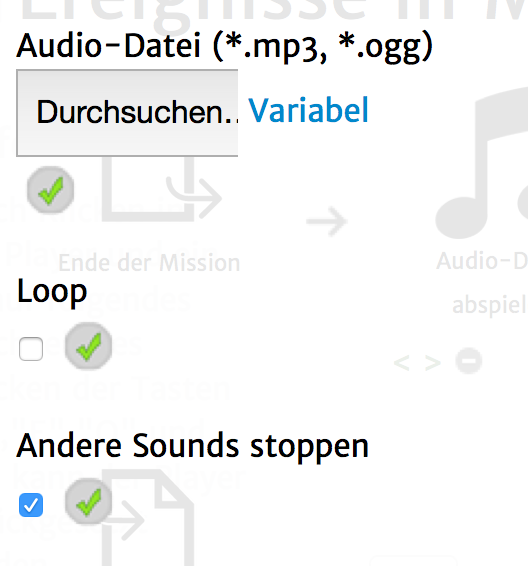

Mit diesem Aktionstyp ist es möglich, eine Audio-Datei abzuspielen.
Folgende Einstellungsmöglichkeiten gibt es für diesen Aktionstyp:
|  | Audio-Datei: Die Audio-Datei, die abgespielt werden soll. Bitte nur MP3-Dateien benutzen und am Besten auf einem eigenen Server hochladen und per Klick auf "Variabel" nur verlinken. Dieser Link kann auch auf eine Audio-Aufnahme des Spielers zeigen. Benutze dafür den Variablennamen und schreibe "@_" davor. Loop: Wenn du hier einen Haken setzt, wird die Audio-Datei in Endlosschleife laufen. Das empfiehlt sich zum Beispiel für Hintergrundmusik. In diesem Fall wird die Wiedergabe erst gestoppt, wenn die Quest beendet wird oder eine andere Audio-Datei mit einem Haken bei "Andere Sounds stoppen" gestartet wird. Andere Sounds stoppen: Wenn du hier einen Haken setzt, werden alle aktuell laufenden Audio-Dateien, auch diese die in Endlosschleife laufen beendet, sobald diese Audio-Datei zu spielen beginnt. |